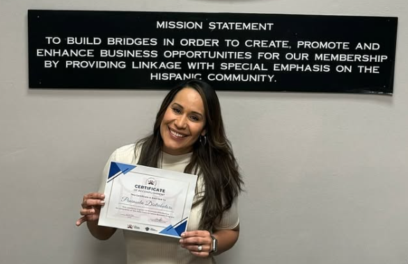

About
Sabrosas came to be as a dream to expand the love of Colombian food. Sabrosas was born
from the heart and hands of Giselle Rosas, a passionate cook with deep Colombian roots
and an even deeper love for sharing her culture through food. What started as a dream
has grown into a flavorful reality—one plate at a time. Giselle has been in the kitchen
since she was a young girl, learning the traditional tastes and techniques of Colombian
cooking from her family. Over the years, her passion only grew stronger, inspiring her
to bring the warmth, spice, and soul of Colombian cuisine to the world.
At Sabrosas, every piece of food tells a story—of heritage, joy, and connection. Whether you're
familiar with Colombian flavors or discovering them for the first time, Sabrosas invites
you to experience food that feels like home, no matter where you are.
